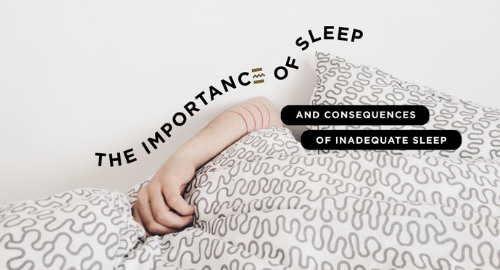

1 / 6
2 / 6
3 / 6

4 / 6
5 / 6
6 / 6
TCM and Obesity Not only does obesity affect one's appearance,more importantly, it also increases the risk of developing certain conditions such as diabetes, hyperlipidemia, hypertension, arteriosclerosis (heart disease), fatty liver, infertility, etc. A TCM treatment does not deal only with the excess fats. It also treats the underlying condition of the body that might have led to the weight gain. |
Boosting Immunity with TCM As long as our body's immunity is strong enough, we should be shielded from any pathogens that would otherwise cause us to become ill. In this article, let's find out how we can boost our immunity with TCM. |
 The Importance of Sleep and Consequences of Inadequate Sleep In modern society today, most people do not get enough rest. We can stay up all night to work, study, or have fun and neglect sleep. However, most people do not know that a lack of rest, especially on a regular basis; can have many short-term and long-term consequences/effects. |
Stay Updated, Stay Connected, click here.
Address
138 Market Street, #38-01,
Singapore 048946
Directions